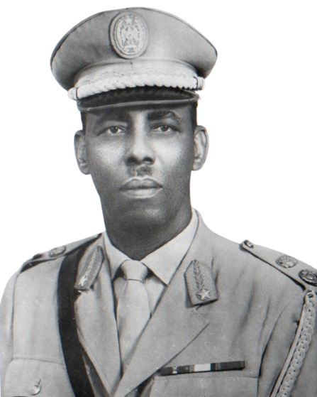

Kani waa maqaal ku saabsan madaxweynahii hore ee wadanka Soomaaliya Maxamed Siyaaad Barre (Af Ingiriis : Mohamed Siad Barre; Af Carabi: محمد سياد بري) wuxuu ahaa Madaxweynihii 3aad ee Soomaaliya (21 Oktoobar 1969 - 26 Jannayo 1991); kaligii-teliye ciidanka xooga sanadihii 1969kii ilaa 1991dii. Jaale Maxamed Siyaad Barre wuxuu ku dhashay magaalada Garbaharey, bishiii Oktoobar 6 ee 1919kii; wuxuu ku dhintey magaalada Lagos ee dalka Nigeria bishii Janaayo 2 ee sanadkii 1995dii asagoo ah 75 sano jir. Wakhti ay xamaasad siyaasadeed ka taagneyd wadanka Soomaaliya ayaa 1969kii koox ciidanka xooga ah oo uu hogaaminayo Jaale Barre af-gembi lama filaan ah ku qabsadeen awooda wadanka ayaga oo hal habeen ku qabsadey magaalo madaxda Muqdisho, halkaasi ooy kaga dhawaaqeen dowladii Kacaanka Umada Soomaaliya. Jaale Barre wuxu wadanka u hor kacay horumar degdeg ah oo muuqda, ayadoo si iskaa-wax-u-qabso ah loo dhisey wadooyinka, dugsiyada, xarumaha bulshada, cusbitaalada IWM. Sidoo kale waxaa dowladu la wareegtay maamulka iyo faro ku heynta bangiyada, beeraha waaweyn, shirkadaha muhiimka ah, wershadaha iyo dhamaan wixii muhiim ahaa sida ganacsiga iyo baayac-mushtarka. Dowladu waxay si qeexan u mamnuucdey qabyaalada, qoloqoleeysiga iyo iskala-sooca bulshada Soomaaliyeed dhexdeeda ah taasi oo si shaaric ah loo aasay qabyaalada, isla markaana lagu dhawaaqey in shacabka wadanku siman yihiin meel kasta ooy ka soo jeedaan ama qolo kasta ooy ku abtirsadaan. Waxyaabaha ugu waawayn ee Kacaankii Umada Soomaaliyeed ku soo kordhiyeen waxay ahayd hirgelinta qoritaanka Far Soomaaliga, taasi oo noqotey mid dhaxalgal u ah bulsho weynta ku hadasha luuqada Af-Soomaaliga. Si loo fidiyo oo loo kobciyo qoritaanka luuqada Soomaaliga ayaa dowladu waxay samaysay Ololihii Af-Soomaaliga ee bilaabmey sanadkii 1974tii, wakhtigaasi oo dugsiyada la xidhey si 25,000 oo arday iyo 3,000 askarta ciidanka xooga ah u tegaan miyi iyo magaalo si ay u soo baraan qoritaanak farta cusub e Af-Soomaaliga. Dhowrkii sano ee xigay waxaa dowladu ka gaadhay heer sare ololahaas baritaanka farta Soomaaliga iyada oo sii kordhisey dadaalkii iyo tababaradii.
Sanadihii badnaa ee Jaale Maxamed Siyaad Barre hayay talada wadanka Soomaaliya wuxuu gaadhsiiyey umada iyo wadanka Soomaaliya heerkii ugu sareeyay ee Soomaali waligeed gaadho. Waxaa horumar muuqda lagu sameeyay wax soo saarka wadanka ayadoo la dhisey wershado faro badan. Xaga ciidanka xooga iyo kuwa qalabka sida aad ayaa loo dhisay, waxayna Soomaaliya ka mid noqotey shanta wadan ee ugu awooda badan qaarada Afrika. Dhaqaalaha, waxbarashada, caafimaadka iyo shaqooyinka ayaa si xoowli ah u koray. Dadka Soomaalida oo 90% reer baadiye ahaa ayaa noqdey ilaa 40% reer magaal aqoon leh
Si kastaba ha ahaatee, 21 sano oo xukun milatari ka dib ayaa xoogii Kacaanka Umada Soomaaliya lagu khasbey ineey ka baxaan magaalo madaxda wadanaka midaasi ooy ka dambeeyeen ururo mucaarid iyo dagaalyahano qabiilo u dagaalamaya. Bishii Janaayo 26keedii ee 1991kii ayaa Jaale Maxamed Siyaad Barre ka degay maamulka iyo talada dowladii kacaanka ee ka talineeysay wadanka Soomaaliya, asaga oo wadanka ka baxay. Madaxweyne Siyaad Barre asagoo 75 sanno jir ah wuxuu ku geeriyooday magaalada Lagos ee wadanka Nayjeeriya bishii Oktoobar 26keedii sanadkii 1995kii. Marxuumka waxaa lagu aasay gobolka uu u dhashay ee Geddo.
Taariq nololeedkii Maxamed Siyaad Bare iyo xiligii uu ku soo biiray Ciidanka
Madaxweyne Maxamed Siyaad Barre oo yaraantiisiahaaa wiil yar oo reer baadiye ah ayaa markii ugu horeysay waxuu yimid Degmada Dhuusamareeb, wuxuuna uga sii gudbay magaalada Beledweyne, wuxuuna nasiib wanaag la kulmay askar halkaa lagu qoraayay oo uu ka mid noqday dadkii ciidamadii dhibowga 1936-dii ku galay xerada tababarada ee Beledwenye.
Max’ed Siyaad Bare Markii tababarki uu dhamaaday waxaa loo soo bedelay Magaalada Muqdisho, waxaana la keenay si uu tababaro dheeri ah oo ciidanimo ugu sii qaato Xeradii Ciidamada ee ku taalay degmada Xamar Jajab ee Magaalada Muqdisho. Max’ed Siyaad Bare wuxuu ka tagay howshii ciidanimada 1939-kii, kaddib markii loo soo sheegay geeridii laba adeeradiis ah oo kale ahaa Jaamac Bare iyo Maxamed Bare wuxuuna aaday deegaanka Ulasan ee ka tirsan Degmada Dhuusamareeb oo cidiisu degenaayeen.
Max’ed Siyaad Bare miyiga ayuu degey wuxuuna ku guursaday Xaaskiisii ugu horeeysay oo lagu magacaabo jiray Faadumo Aw-Muse Sanadkii 1941-dii markaas oo uu Ingiriisku kala wareegay awoodii dalka Soomaaliya Taliskii Talyaaniga oo dagaalkii aduunweynaha labaad looga itaal roonaaday. Max’ed Siyaad Bare isla sanadkaas wuxuu ku biiray Ciidamada Ingiriiska, wuxuuna dalacaadii ugu horeysay oo aheyd Alifle helay Sanadkii 1941-dii, Alifkii labaadna wuxuu qaatay Sanadkii 1944tii, waxaana waxbarasho loogu diray Magaalada Nairobi Dugsiga la yiraahdo
“Gin School” waxaana tababarkaas kaddib uu noqday kormeere Koowaad 1950-kii. Markii Talyaaniga Dalka uu ku soo noqday, Max’ed Siyaad Bare oo saddex xarigle ah waxaa loo qaaday dalka Talyaaniga sanadkii 1952-dii .
16-kii October, 1954-tii ayuu Siyaad Bare qaatay Xidigtii ugu horeesay uuna noqday Sarkaal. Siyaad Bare wuxuu laba xidigle u dalacay sanadii 1955-tii asigoo sanadki 1957-dii noqday kabtan ama Dhamme kaddib 1958-dii waxaa uu Max’ed Siyaad Bare noqday Dhamme ka tirsan Ciidanka Booliska Soomaaliyeed. waxaana loo magacaabay Xafiiska Ciidanka Booliska Soomaaliyeed.
1960-kii, waxaa la dhisay Ciidanka Xooga Dalka Soomaaliya uuna hogaaminaayay Generaalkii sida aadka ah loo jeclaa Generaal Daauud C/laahi Xersi oo markii uu geeriyooday sanadkii 1965tii uu bedelay oo jagadiisii qabtay General Max’ed Siyaad Bare asigoo noqday taliyihii Xooga Dalka Soomaaliya (XDS) isagoo xukunka hayay mudo 21 sano ah, wuxuuna ku geeriyooday Dalka Nayjeeriya oo uu magangalyo ku joogay ilaa iyo sanadkii 1995-tii.
Lama yaqaan waqti cayiman oo uu dhashay General Max’ed Siyaad Bare, sababtoo ah wuxuu ku dhashay MIYI, xataa waxaa dood ka taagan tahay halka uu ku dhashay inkastoo warbaahinta rasmiga ah ee Kacaanku ay qori jireen inuu ku dhashay deegaanka Baardheere. Waxaa la qiyaasayaa in Max’ed Siyaad Bare uu dhashay sanadkii 1912-kii in kastoo wargeysyada rasmiga ah ee Kacaanku ay qori jireen inuu dhashay sanadkii 1920kii.
Max’ed Siyaad Bare hooyadiis waxaa la oran jiray Shaqlan Warfaa, waxeyna geeriyootay asagoo sideed jir ah, aabihiisna wuxuu geeriyooday 2 sano kaddib Max’ed Siyaad Bare oo 10 jir ah, waxaana soo koriyay aderkiis Xirsi Bare iyo ayeeydiis Sacdiyo, wuxuuna ahaa curudka aabihiis Siyaad Bare oo lagu naaneesi jiray “Siyaad Garba Weyne”, inkastoo ay dadkii yaqaanay Max’ed Siyaad Bare ay sheegeen in aabihiis Siyaad Bare lagu dilay dagaal qabiil uuna ahaa abaanduulihii colkaas. Waxaa Radio Muqdisho iyo Wargeysyada Kacaankuba ay qori jireen in uu Siyaad Bare ahaa halgamaa weyn uuna ka mid ahaa Ciidamadii uu hogaaminaayay Cumar Samatar oo gumeysigii Talyaanigu la dagaalamayay una ku shahiiday aagga Ceel Mirikh oo ku yaalo deegaanka Dhuusamareeb 1930-kii
Xersi Bare oo ahaaa Max’ed Siyaad Bare adeerkiis, ahana ninkii gacanta ku haayay waxaa la dilay 3 sano ka dib dhimashaddii Siyaad Bare abaarihii sanadkii 1933-dii.
Sanadkii 1936-dii ayaa Max’ed Siyaad Bare ka soo tagay Xoolihii miyiga oo uu xanaaneyn jiray iyadoo xilgaas cidahooda ay degenaayeen aaga Ceel-gaab.
Jaale Maxamed Siyaad Barre wuxuu 1919kii ku dhashay Magaalada Garbaharey. Jaaluhu wuxuu ka soo jeedaa beesha Mareexaan ee Daarood, gaar ahaan lafta reer Diini.[1][2] His parents died when he was ten years old.[2] Waalidkiis waxay dhinteen isaga oo toban jir ah
Ka dib markuu dhamaystey waxbarashodiisa dugsiga hoose magaalada Luuq ee koonfurta Soomaaliya, ayaa Mudane Barre u wareegay magaalada Muqdisho oo ahayd magaalo madaxdii maamulkii Soomaali Talyaani, si uu u sii kordhisto waxbarashadiisa oo dugsi sare u galo asaga oo wakhtigaasi sheegtay inuu ka soo jeedo magaalada Garbahaarey.[2] [1] Sanadihii ku xigey Siyaad Barre waxaa u suurto gashay in loo qaato askari darajo sare oo Ciidanka Amaanka ah taasi oo ku beegan sanadkii 1940kii.[3] Goortii ay Koonfurta Soomaaliya hoos tegtay maamulkii Boqortooyada Ingiriiska ayaa wuxuu ka gaadhay ciidanka xooga darajadii ugu sareeysay ee nin Soomaali ah gaadho wakhtigaasi.[2]
Sanadihii 1950kii, markii Qaramada Midoobay la wareegtay maamulka iyo gacan ku heynta dhulka Soomaaliya ayadoo u wakiilatay dowlada Talyaaniga ayaa Jaale Maxamed Siyaad Barre u helay fursad deeq waxbarasho ku saabsan ciidanka inuu u tego wadanka Talyaaniga halkaas oo uu ku sugnaa wakhti labo sano ah.[2] Goortii uu ku soo noqdey dalka Soomaaliya wuxuu noqdey ku xigeenka hogaamiyaha sare ee Ciidanka Xooga halkaasi oo uu sii hayay ilaa wakhtigii wadanku xornimada qaatey sanadkii 1960kii. Tabobaro iyo dhoolatusyo milatari uu la qaatey saraakiil ka tirsan ciidanka xooga Midowga Sofiyet ayaa Jaale Siyaad ku beertay inuu u ololeeyo nidaamka shuuciga ahaa ee loo yaqaaney Marsiisam. Sidoo kale wuxuu si adag u aaminsanaa wadaniyad iyo mideeynta Shanta Soomaaliyeed.